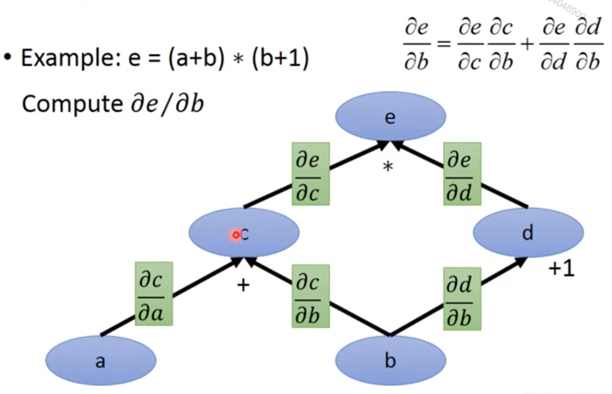
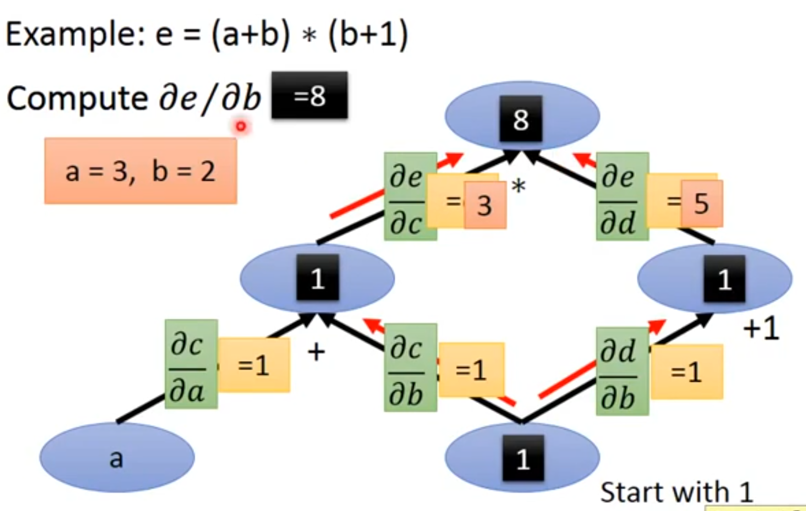
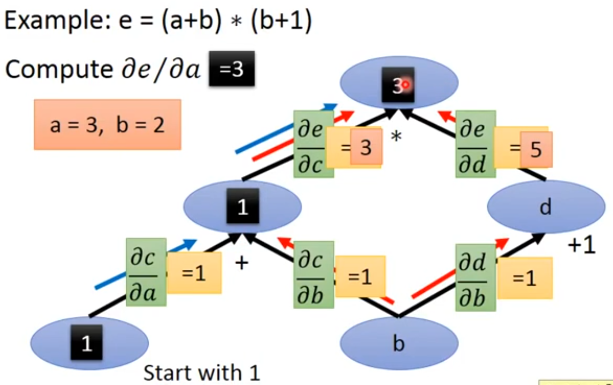
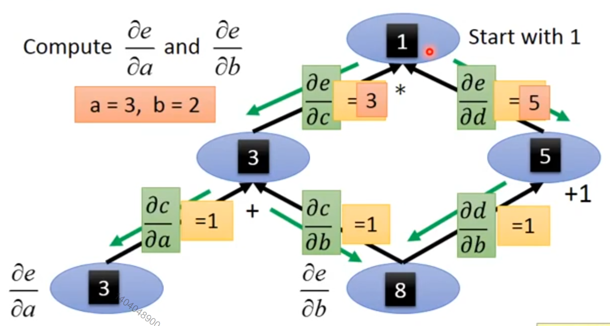

使用链式规则，我们可以直接写出某个标量关于计算图中任何产生该标量的节点的梯度的代数表达式。 然而，实际在计算机中计算该表达式时会引入一些额外的考虑。
具体来说，许多子表达式可能在梯度的整个表达式中重复若干次。 任何计算梯度的程序都需要选择是存储这些子表达式还是重新计算它们几次。 图6.9给出了一个例子来说明这些重复的子表达式是如何出现的。 在某些情况下，计算两次相同的子表达式纯粹是浪费。 在复杂图中，可能存在指数多的这种计算上的浪费，使得简单的链式法则不可实现。 在其他情况下，计算两次相同的子表达式可能是以较高的运行时间为代价来减少内存开销的有效手段。
[success] 基于计算图前向传播计算偏微分

假设要根据上图计算b对e的偏微分，可以这样做：
（1）依次求出b、c、d、e上的值。
（2）依次求出b到e的链路上任意两个相邻结点的偏微分 、、、
(3) 令b上的值为1，记作{b}（不是b的值）、代表b对该结点的微分。
(4) 用相乘和相加的计算方法计算{c}、{d}、{e}
(5) {e}就是要求的b对e的微分。
 假如现在要求a对e的偏微分，可以继续使用上面过程中（1）、（2）的结果，然后令{a}=1，重新计算出{e}
 在分别求和的过程中，虽然重复使用了（1）、（2）的结果，
但分别计算{e}时仍存在重复的计算，比如由{c}计算{e}的这一步。
在实际的前馈网络求参数偏导的过程中，一般都是这种情况，偏导的分子相同，分母不同。
如果所有参数偏导的计算都使用以上过程，都产生大量的重复计算。
我们首先给出一个版本的反向传播算法，它指明了梯度的直接计算方式（算法6.2以及相关的正向计算的算法6.1），按照它实际完成的顺序并且递归地使用链式法则。
[success] 基于计算图反向传播计算偏微分
（1）依次求出a、b、c、d、e上的值。
（2）依次求出b到e的链路上任意两个相邻结点的偏微分 、、、
(3) 令e上的值为1，记作{e}（不是e的值）、代表该结点对e的微分。 (4) 用相乘和相加的计算方法计算{c}、{d}、{b}、{a}
(5) {a}、{b}分别是a、b对e的微分。
 这样就一次性求出了多个偏微分。
我们可以直接执行这些计算或者将算法的描述视为用于计算反向传播的计算图的符号表示。 然而，这些公式并没有明确地操作和构造用于计算梯度的符号图。 这些公式将在后面的第6.5.6节和算法6.5中给出，其中我们还推广到了包含任意张量的节点。
[warning] ?[?] 这一段看不懂
首先考虑描述如何计算单个标量（例如训练样本上的损失函数）的计算图。 我们想要计算这个标量对个输入节点到的梯度。
[success]
看到这里时，先不要把前馈网络中的Backproc算法联系起来。这里只是将“根据计算图计算梯度“的过程描述得更具体一些。
这部分的内容是为了给backprop算法做铺垫的，但不要混淆。
感觉这段文字把算法6.1讲复杂了，其实就是上面例子中的过程。
换句话说，我们希望对所有的计算。 在使用反向传播计算梯度来实现参数的梯度下降时，将对应单个或者小批量实例的代价函数，而到则对应于模型的参数。
我们假设图的节点已经以一种特殊的方式被排序，使得我们可以一个接一个地计算他们的输出，从开始，一直上升到。
如算法6.1中所定义的，每个节点与操作相关联，并且通过对以下函数求值来得到
其中是所有父节点的集合。
[success]
以上图作为例子。假设所有结点按照上图的方式排列。
以为例，那么
{% raw %}
\begin{algorithm}[htbp]
\caption{计算将{% math_inline %}n_i{% endmath_inline %}个输入{% math_inline %}u^{(1)}{% endmath_inline %}到{% math_inline %}u^{(n_i)}{% endmath_inline %}映射到一个输出{% math_inline %}u^{(n)}{% endmath_inline %}的程序。
这定义了一个计算图，其中每个节点通过将函数{% math_inline %}f^{(i)}{% endmath_inline %}应用到变量集合{% math_inline %}A^{(i)}{% endmath_inline %}上来计算{% math_inline %}u^{(i)}{% endmath_inline %}的值，{% math_inline %}A^{(i)}{% endmath_inline %}包含先前节点{% math_inline %}u^{(j)}{% endmath_inline %}的值满足{% math_inline %}j<i{% endmath_inline %}且{% math_inline %}j \in Pa(u^{(i)}){% endmath_inline %}。
计算图的输入是向量{% math_inline %}x{% endmath_inline %}，并且被分配给前{% math_inline %}n_i{% endmath_inline %}个节点{% math_inline %}u^{(1)}{% endmath_inline %}到{% math_inline %}u^{(n_i)}{% endmath_inline %}。计算图的输出可以从最后一个（输出）节点{% math_inline %}u^{(n)}{% endmath_inline %}读出。}
\begin{algorithmic}
\FOR {{% math_inline %}i=1, \ldots, n_i{% endmath_inline %}}
\STATE {% math_inline %}u^{(i)} \leftarrow x_i{% endmath_inline %}
\ENDFOR
\FOR {{% math_inline %}i=n_i+1, \ldots, n{% endmath_inline %}}
\STATE {% math_inline %}A^{(i)} \leftarrow \{ u^{(j)} \mid j \in Pa(u^{(i)}) \}{% endmath_inline %}
\STATE {% math_inline %}u^{(i)} \leftarrow f^{(i)}(A^{(i)}){% endmath_inline %}
\ENDFOR
\STATE {\bf return} {% math_inline %}u^{(n)}{% endmath_inline %}
\end{algorithmic}
\end{algorithm}
{% endraw %}
[success] 算法6.1 正向传播算法 已知
可知，要计算，先要得到x，并计算
正向传播就是信息从x传递到的过程。
同理，在计算时也要先
算法6.1想说明的是：
不需要每次都从开始计算。
可以按照层递进，沿着正向一层一层地往前算，每算完一层就把这一层的结果记下来。
计算下一层时直接在上一层结果的基础上进行计算。
每一层的中间结果存下来，增加了内存的消耗。
但避免重复计算，减少了运行时间。
该算法详细说明了前向传播的计算，我们可以将其放入图中。 为了执行反向传播，我们可以构造一个依赖于并添加额外一组节点的计算图。 这形成了一个子图，它的每个节点都是的节点。
[warning] 图B和图G在哪？
中的计算和中的计算顺序完全相反，而且中的每个节点计算导数与前向图中的节点相关联。 这通过对标量输出使用链式法则来完成：
[warning] 这个公式是不是有点总是？i怎么会属于呢？
[success]
仍以上图为例。并假设j=b，在原图的反向图中，Pa(j)={c, d}
这在算法6.2中详细说明。 子图恰好包含每一条对应着中从节点到节点的边。 从到的边对应着计算。 另外，对于每个节点都要执行一个内积，内积的一个因子是对于子节点的已经计算的梯度，另一个因子是对于相同子节点 的偏导数组成的向量。
[success]
和都是向量，因此它们的乘法叫内积。
总而言之，执行反向传播所需的计算量与中的边的数量成比例，其中每条边的计算包括计算偏导数（节点关于它的一个父节点的偏导数）以及执行一次乘法和一次加法。 下面，我们将此分析推广到张量值节点，这只是在同一节点中对多个标量值进行分组并能够更高效地实现。
[success] 算法6.2 反向传播算法 Note：中文版中算法6.2的内容跑到6.5.4节去了 反向传播算法和正向传播算法的思想是一样的。
根据微积分中的链式法则来计算每个unit的偏导。
先计算第L-1层的偏导：再计算第L-2层的偏导：
不需要继续算到第1层了，仅观察第L-1层和L-2层的偏导，就会发现L-2层的偏导需要用到L-1层的偏导结果。
这与计算的过程是非常相似的。
只不过这次是信息从代价函数传递到x的过程，因此称为反向传播。
算法6.2想说明的是：
不需要每次都从第L-1、L-2、...的偏导开始计算。
可以按照层递进，沿着反向一层一层地往后算，每算完一层就把这一层的结果记下来。
计算上一层时直接在下一层结果的基础上进行计算。
每一层的中间结果存下来，增加了内存的消耗。
但避免重复计算，减少了运行时间。
反向传播算法被设计为减少公共子表达式的数量而不考虑存储的开销。 具体来说，它大约对图中的每个节点执行一个Jacobian乘积。 这可以从算法6.2中看出，反向传播算法访问了图中的节点到节点的每条边一次，以获得相关的偏导数。 反向传播因此避免了重复子表达式的指数爆炸。 然而，其他算法可能通过对计算图进行简化来避免更多的子表达式，或者也可能通过重新计算而不是存储这些子表达式来节省内存。 我们将在描述完反向传播算法本身后再重新审视这些想法。
[success]
反向传播的原理：
由微积分中的链式法则可知：偏导可以表示为多个子项相乘的结果。
这些子项可能会被计算多次。对于这些子项，是“1. 作为中间结果存储下来”，还是“2.每次都重新计算”？
选择前者，意味着高内存开销，选择后者，意味着高运行时间。
反向传播算法选择了前者，牺牲一部分内存，减少运行时间。
在实际使用的过程中，根据实际情况，也可以选择牺牲运行时间，减少内存。
{% raw %}
\begin{algorithm}[htb!]
\caption{反向传播算法的简化版本，用于计算{% math_inline %}u^{(n)}{% endmath_inline %}关于图中变量的导数。
这个示例旨在通过演示所有变量都是标量的简化情况来进一步理解反向传播算法，这里我们希望计算关于{% math_inline %}u^{(1)},\ldots,u^{(n_i)}{% endmath_inline %}的导数。
这个简化版本计算了关于图中所有节点的导数。
假定与每条边相关联的偏导数计算需要恒定的时间的话，该算法的计算成本与图中边的数量成比例。
这与前向传播的计算次数具有相同的阶。
每个{% math_inline %}\frac{\partial u^{(i)}}{\partial u^{(j)}}{% endmath_inline %}是{% math_inline %}u^{(i)}{% endmath_inline %}的父节点{% math_inline %}u^{(j)}{% endmath_inline %}的函数，从而将前向图的节点链接到反向传播图中添加的节点。}
\begin{algorithmic}
\STATE 运行前向传播 (对于此例是\alg?) 获得网络的激活。
\STATE 初始化 {\tt grad\_table}，用于存储计算好的导数的数据结构。 {% math_inline %}{\tt grad\_table}[u^{(i)}]{% endmath_inline %}将存储{% math_inline %}\frac{\partial u^{(n)}}{\partial u^{(i)}}{% endmath_inline %}计算好的值。
\STATE {% math_inline %}{\tt grad\_table}[u^{(n)}] \leftarrow 1{% endmath_inline %}
\FOR {{% math_inline %}j=n-1{% endmath_inline %} down to 1}
\STATE 下一行使用存储的值计算 {% math_inline %}\frac{\partial u^{(n)}}{\partial u^{(j)}} =
\sum_{i: j \in Pa(u^{(i)})} \frac{\partial u^{(n)}}{\partial u^{(i)}} \frac{\partial u^{(i)}}{\partial u^{(j)}}{% endmath_inline %}：
\STATE {% math_inline %}{\tt grad\_table}[ u^{(j)}] \leftarrow
\sum_{i: j \in Pa(u^{(i)})} {\tt grad\_table}[u^{(i)}]
\frac{\partial u^{(i)}}{\partial u^{(j)}}{% endmath_inline %}
\ENDFOR
\STATE {\bf return} {% math_inline %}\{ {\tt grad\_table}[ u^{(i)}] \mid i=1, \cdots, n_i \} {% endmath_inline %}
\end{algorithmic}
\end{algorithm}
{% endraw %}